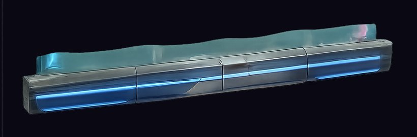
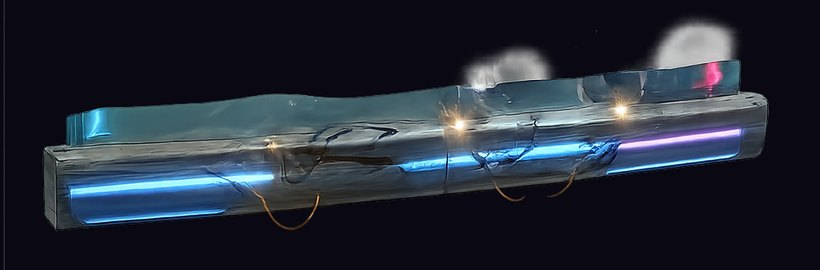
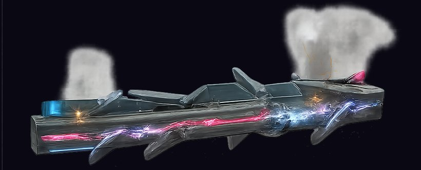
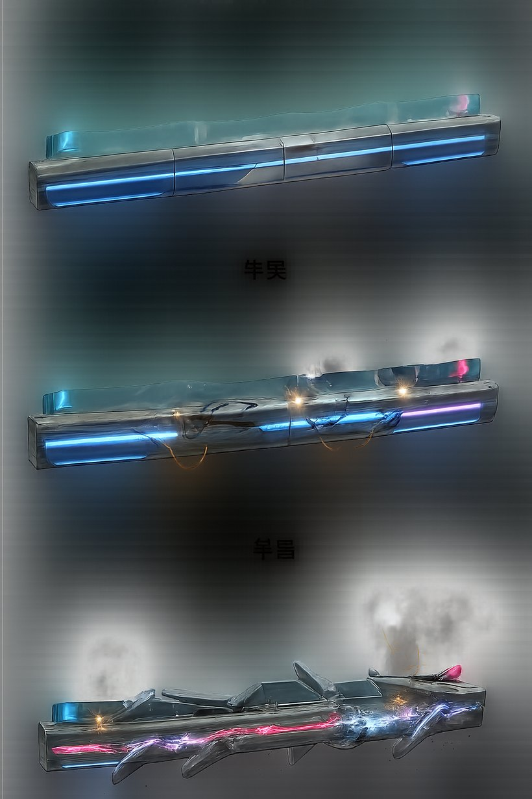
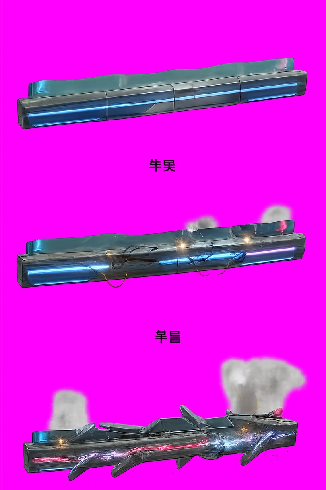

三段受損

① 完好 — 燈條完整明亮、裝甲平整、青藍能量帶貫穿

② 半毀 — 裂痕與凹陷、部分燈熄、橘色電火花、開始冒白煙

③ 將破 — 裝甲板脫落懸掛、霓虹只剩暗紅殘光、藍白電弧與大量黑煙
- 風格
- 賽博龐克：青藍霓虹能量帶 × 深色金屬 × 洋紅點綴 × 橘色危險警示
- 產製
- Grok 生圖 → OpenAI 去背一次到位（彙整大圖，三段同一張）
- 花費
- 約 $0.40
去背檢查
合成到洋紅背景
邊緣乾淨

原圖 — 看起來背景有灰霧

合成後 — 灰霧其實是低透明度的煙，正確保留
- 透明像素
- 72.9%（三根細長橫條，合理）
- 邊緣
- 無 halo、無殘留色圈
已知問題
三件事
待處理
- 圖中有亂碼漢字（「牛吴」「早昌」）。prompt 明確寫了不要文字還是出現。不算阻礙——它們落在三根護欄之間的空隙，切割時用連通元件分析會當成獨立區塊，不輸出就好。
- 能量護盾光膜沒做出來。要求的「上方浮一層淡青色護盾光膜」變成頂部一道玻璃質感的唇邊。可接受，或之後用程式端的
ZlFx 層加一層半透明光膜（$0）。
- 比例已修正。素材每根約 4.5:1，但遊戲裡防線原本只有 14 單位高（約 60:1），直接貼會壓扁成一條線。已將防線加高到 60 單位，讓護欄照原比例顯示。
下一批
- 三種殭屍走路動畫（walker 重做配合賽博龐克、runner、brute）
- 3 支影片 × $0.32 = $0.96
- 累計美術花費：吸血鬼 $2.88 + 殭屍 $0.40 = $3.28